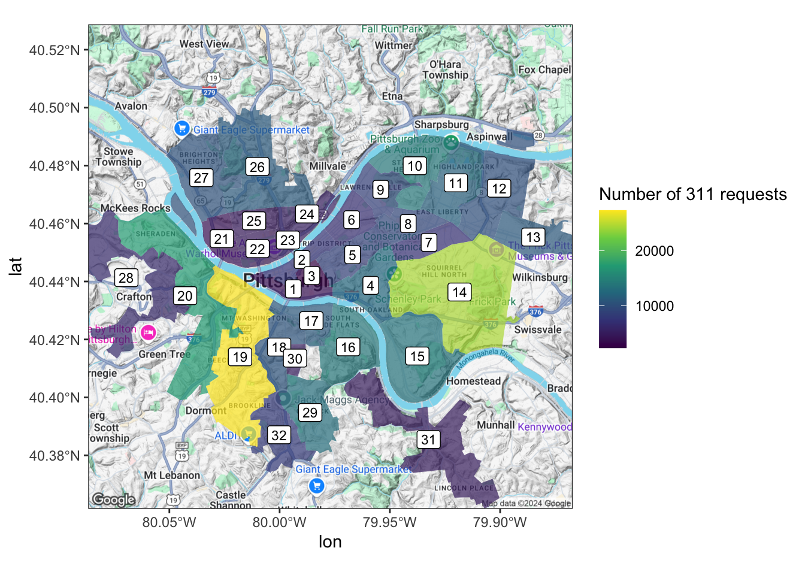

install.packages("package_name")This talk was presented on May 30th, 2019 at Code For Pittsburgh.
Before we dive in, this presentation assumes that the user has basic familiarity with tidyverse, mainly dplyr. Knowing how to use %>% will be very helpful.
How to install packages:
Get your census API key: https://api.census.gov/data/key_signup.html
Configure environment:
library(tidycensus)
library(tidyverse)
library(sf)
library(tigris)
library(ggmap)
library(janitor)
theme_set(theme_bw())
options(tigris_use_cache = TRUE,
scipen = 4,
digits = 3)Packages
{tidycensus}
tidycensus gives access to the Census API and makes it easy to plot data on a map.
Data
- Demographics
- Decennial Census
- American Community Survey (ACS)
- error estimates
- Geometries
- country
- county
- zip code
- blocks
- tracts
- and more
{sf}
simple features makes it easy to work with polygon data in R. It uses the familiar tidyverse framework: everything is a tibble, and it uses %>%.
ggplot2::geom_sf() makes it easy to plot sf polygons.
sf can also do spatial calculations such as st_contains, st_intersects, and st_boundary.
{ggmap}
Uses Google Maps API to get basemaps. The API now requires a credit card, but it has a fairly generous “free” tier.
Using {tidycensus}
census_api_key("your_key_here")This loads the variables from the Decennial Census in 2010:
variables_dec <- load_variables(year = 2010, dataset = "sf1", cache = TRUE)# A tibble: 8,959 × 3
name label concept
<chr> <chr> <chr>
1 H001001 Total HOUSING UNITS
2 H002001 Total URBAN AND RURAL
3 H002002 Total!!Urban URBAN AND RURAL
4 H002003 Total!!Urban!!Inside urbanized areas URBAN AND RURAL
5 H002004 Total!!Urban!!Inside urban clusters URBAN AND RURAL
6 H002005 Total!!Rural URBAN AND RURAL
7 H002006 Total!!Not defined for this file URBAN AND RURAL
8 H003001 Total OCCUPANCY STATUS
9 H003002 Total!!Occupied OCCUPANCY STATUS
10 H003003 Total!!Vacant OCCUPANCY STATUS
# ℹ 8,949 more rowsThis loads the ACS variables for 2017:
variables_acs <- load_variables(year = 2017, dataset = "acs5", cache = TRUE)# A tibble: 25,071 × 4
name label concept geography
<chr> <chr> <chr> <chr>
1 B00001_001 Estimate!!Total UNWEIGHTED SAMP… block gr…
2 B00002_001 Estimate!!Total UNWEIGHTED SAMP… block gr…
3 B01001A_001 Estimate!!Total SEX BY AGE (WHI… tract
4 B01001A_002 Estimate!!Total!!Male SEX BY AGE (WHI… tract
5 B01001A_003 Estimate!!Total!!Male!!Under 5 years SEX BY AGE (WHI… tract
6 B01001A_004 Estimate!!Total!!Male!!5 to 9 years SEX BY AGE (WHI… tract
7 B01001A_005 Estimate!!Total!!Male!!10 to 14 years SEX BY AGE (WHI… tract
8 B01001A_006 Estimate!!Total!!Male!!15 to 17 years SEX BY AGE (WHI… tract
9 B01001A_007 Estimate!!Total!!Male!!18 and 19 years SEX BY AGE (WHI… tract
10 B01001A_008 Estimate!!Total!!Male!!20 to 24 years SEX BY AGE (WHI… tract
# ℹ 25,061 more rowsMap total population in the U.S.
Use View() to browse the variables
variables_dec %>%
filter(str_detect(concept, "POPULATION")) %>%
View()P001001 has the data we are looking for.
Query the total population of the continental U.S. states:
states <- get_decennial(geography = "state",
variables = c(total_pop = "P001001"),
geometry = TRUE,
output = "wide",
year = 2010)The states tibble contains the census data and the polygons for the geometries.
Simple feature collection with 52 features and 3 fields
Geometry type: MULTIPOLYGON
Dimension: XY
Bounding box: xmin: -179 ymin: 17.9 xmax: 180 ymax: 71.4
Geodetic CRS: NAD83
# A tibble: 52 × 4
GEOID NAME total_pop geometry
<chr> <chr> <dbl> <MULTIPOLYGON [°]>
1 23 Maine 1328361 (((-67.6 44.5, -67.6 44.5, -67.6 44.5, -67.6 …
2 25 Massachusetts 6547629 (((-70.8 41.6, -70.8 41.6, -70.8 41.6, -70.8 …
3 26 Michigan 9883640 (((-88.7 48.1, -88.7 48.1, -88.7 48.1, -88.7 …
4 30 Montana 989415 (((-104 45, -104 45, -104 45, -104 45, -105 4…
5 32 Nevada 2700551 (((-114 37, -114 37, -114 36.8, -114 36.7, -1…
6 34 New Jersey 8791894 (((-75.5 39.7, -75.5 39.7, -75.5 39.7, -75.5 …
7 36 New York 19378102 (((-71.9 41.3, -71.9 41.3, -71.9 41.3, -71.9 …
8 37 North Carolina 9535483 (((-82.6 36, -82.6 36, -82.6 36, -82.6 36, -8…
9 39 Ohio 11536504 (((-82.8 41.7, -82.8 41.7, -82.8 41.7, -82.8 …
10 42 Pennsylvania 12702379 (((-75.4 39.8, -75.4 39.8, -75.5 39.8, -75.5 …
# ℹ 42 more rowsMake a bar graph with the data:
states %>%
mutate(NAME = fct_reorder(NAME, total_pop)) %>%
ggplot(aes(NAME, total_pop)) +
geom_col() +
coord_flip()Plot the same data on a map:
states %>%
filter(NAME != "Alaska",
NAME != "Hawaii",
!str_detect(NAME, "Puerto")) %>%
ggplot(aes(fill = total_pop)) +
geom_sf() +
scale_fill_viridis_c("Total Population")Pull the total population of each county in PA and plot it:
pennsylvania <- get_decennial(geography = "county",
variables = c(total_pop = "P001001"),
state = "PA",
geometry = TRUE,
output = "wide",
year = 2010)
pennsylvania %>%
ggplot(aes(fill = total_pop)) +
geom_sf() +
scale_fill_viridis_c()ggplot2 intelligently handles cases when we don’t have data for a certain polygon:
pennsylvania %>%
mutate(total_pop = case_when(NAME == "Allegheny County, Pennsylvania" ~ NA_real_,
NAME != "Allegheny County, Pennsylvania" ~ total_pop)) %>%
ggplot(aes(fill = total_pop)) +
geom_sf() +
scale_fill_viridis_c()We can stack multiple polygons in the same graph to highlight Allegheny County:
allegheny <- pennsylvania %>%
filter(str_detect(NAME, "Allegheny"))
pennsylvania %>%
ggplot() +
geom_sf(aes(fill = total_pop)) +
geom_sf(data = allegheny, color = "white", linetype = 2, size = 1, alpha = 0) +
scale_fill_viridis_c()
We can also use tidycensus to download demographic data for census tracts.
Set the variables we want to use first:
racevars <- c(White = "P005003",
Black = "P005004",
Asian = "P005006",
Hispanic = "P004003")
#note that this data is long, not wide
allegheny_tracts <- get_decennial(geography = "tract",
variables = racevars,
state = "PA",
county = "Allegheny County",
geometry = TRUE,
summary_var = "P001001",
year = 2010) Calculate as a percentage of tract population:
allegheny_tracts <- allegheny_tracts %>%
mutate(pct = 100 * value / summary_value)Facet by variable and map the data:
allegheny_tracts %>%
ggplot(aes(fill = pct)) +
geom_sf(color = NA) +
facet_wrap(~variable) +
scale_fill_viridis_c()We can overlay the boundaries of Pittsburgh over the same graph.
Download the boundary shapefile and use sf::st_read to read it into R:
city_pgh <- st_read("post_data/Pittsburgh_City_Boundary-shp/City_Boundary.shp")Reading layer `City_Boundary' from data source
`/Users/conorotompkins/Documents/github_repos/ctompkins_quarto_blog/posts/map-census-data-with-r/post_data/Pittsburgh_City_Boundary-shp/City_Boundary.shp'
using driver `ESRI Shapefile'
Simple feature collection with 8 features and 8 fields
Geometry type: POLYGON
Dimension: XY
Bounding box: xmin: 1320000 ymin: 382000 xmax: 1380000 ymax: 433000
Projected CRS: NAD83 / Pennsylvania South (ftUS)allegheny_tracts %>%
ggplot() +
geom_sf(aes(fill = pct), color = NA) +
geom_sf(data = city_pgh, color = "white", linetype = 2, size = 1, alpha = 0) +
facet_wrap(~variable) +
scale_fill_viridis_c()Working with other data
WPRDC 311 data and city wards
We can also download the shapefile for the City of Pittsburgh wards. The 311 dataset is tagged with the ward the request originated from, so we can use that to aggregate and map the total number of 311 requests per ward.
df_311 <- read_csv("https://data.wprdc.org/datastore/dump/76fda9d0-69be-4dd5-8108-0de7907fc5a4") %>%
clean_names()| request_id | created_on | request_type | request_origin | status | department | neighborhood | council_district | ward |
|---|---|---|---|---|---|---|---|---|
| 203364 | 2017-12-15 14:53:00 | Street Obstruction/Closure | Call Center | 1 | DOMI - Permits | Central Northside | 1 | 22 |
| 200800 | 2017-11-29 09:54:00 | Graffiti | Control Panel | 1 | Police - Zones 1-6 | South Side Flats | 3 | 16 |
| 201310 | 2017-12-01 13:23:00 | Litter | Call Center | 1 | DPW - Street Maintenance | Troy Hill | 1 | 24 |
| 200171 | 2017-11-22 14:54:00 | Water Main Break | Call Center | 1 | Pittsburgh Water and Sewer Authority | Banksville | 2 | 20 |
| 193043 | 2017-10-12 12:46:00 | Guide Rail | Call Center | 1 | DPW - Construction Division | East Hills | 9 | 13 |
| 196521 | 2017-10-31 15:17:00 | Guide Rail | Call Center | 1 | DPW - Construction Division | East Hills | 9 | 13 |
| 193206 | 2017-10-13 09:18:00 | Sidewalk/Curb/HC Ramp Maintenance | Call Center | 1 | DOMI - Permits | Mount Washington | 4 | 19 |
| 195917 | 2017-10-27 10:23:00 | Manhole Cover | Call Center | 1 | DOMI - Permits | Bluff | 6 | 1 |
| 179176 | 2017-08-14 14:00:00 | Neighborhood Issues | Control Panel | 0 | NA | Middle Hill | 6 | 5 |
| 190422 | 2017-09-29 11:46:00 | Mayor's Office | Website | 1 | 311 | North Oakland | 8 | 4 |
Simple feature collection with 32 features and 1 field
Geometry type: GEOMETRY
Dimension: XY
Bounding box: xmin: 1320000 ymin: 382000 xmax: 1380000 ymax: 433000
Projected CRS: NAD83 / Pennsylvania South (ftUS)
# A tibble: 32 × 2
ward geometry
<int> <POLYGON [US_survey_foot]>
1 1 ((1344377 410658, 1344401 410655, 1344473 410650, 1344497 410648, 1344…
2 2 ((1349657 415566, 1349615 415539, 1349572 415508, 1349487 415433, 1349…
3 3 ((1348490 410322, 1348432 410326, 1348333 410334, 1348260 410339, 1348…
4 4 ((1357003 413341, 1357009 413322, 1357024 413281, 1357058 413173, 1357…
5 5 ((1354794 418150, 1354861 418062, 1354918 417978, 1354931 417956, 1355…
6 6 ((1354713 418633, 1354629 418544, 1354609 418522, 1354575 418487, 1354…
7 7 ((1364905 417408, 1364974 417343, 1365180 417147, 1365249 417082, 1365…
8 8 ((1357423 420022, 1357491 420008, 1357693 419965, 1357760 419952, 1357…
9 9 ((1357423 420022, 1357369 420033, 1357314 420045, 1357208 420069, 1357…
10 10 ((1365337 428177, 1365357 428160, 1365370 428141, 1365383 428126, 1365…
# ℹ 22 more rowsPlot the ward polygons:
wards %>%
ggplot() +
geom_sf()Calculate the center of each ward. We will use this to label the wards on the map:
ward_labels <- wards %>%
st_centroid() %>%
st_coordinates() %>%
as_tibble() %>%
clean_names() %>%
mutate(ward = wards$ward)
ward_labels_transformed <- wards %>%
st_transform(4326) |>
st_centroid() %>%
st_coordinates() %>%
as_tibble() %>%
clean_names() %>%
mutate(ward = wards$ward)| x | y | ward |
|---|---|---|
| 1343990 | 410154 | 1 |
| 1345190 | 413807 | 2 |
| 1346380 | 411764 | 3 |
| 1353781 | 410344 | 4 |
| 1351582 | 414257 | 5 |
Count the number of requests per ward:
df_311_count <- df_311 %>%
count(ward, sort = TRUE)Use left_join to join the count data with the coordinates:
ward_311 <- wards %>%
left_join(df_311_count) %>%
mutate(ward_label = ward_labels$ward)Simple feature collection with 32 features and 3 fields
Geometry type: GEOMETRY
Dimension: XY
Bounding box: xmin: 1320000 ymin: 382000 xmax: 1380000 ymax: 433000
Projected CRS: NAD83 / Pennsylvania South (ftUS)
# A tibble: 32 × 4
ward geometry n ward_label
* <dbl> <POLYGON [US_survey_foot]> <int> <int>
1 1 ((1344377 410658, 1344401 410655, 1344473 410650, 134… 3821 1
2 2 ((1349657 415566, 1349615 415539, 1349572 415508, 134… 7188 2
3 3 ((1348490 410322, 1348432 410326, 1348333 410334, 134… 2327 3
4 4 ((1357003 413341, 1357009 413322, 1357024 413281, 135… 12187 4
5 5 ((1354794 418150, 1354861 418062, 1354918 417978, 135… 8514 5
6 6 ((1354713 418633, 1354629 418544, 1354609 418522, 135… 6672 6
7 7 ((1364905 417408, 1364974 417343, 1365180 417147, 136… 6896 7
8 8 ((1357423 420022, 1357491 420008, 1357693 419965, 135… 9128 8
9 9 ((1357423 420022, 1357369 420033, 1357314 420045, 135… 8321 9
10 10 ((1365337 428177, 1365357 428160, 1365370 428141, 136… 14032 10
# ℹ 22 more rowsPlot the data:
ward_311 %>%
ggplot() +
geom_sf(aes(fill = n), color = NA) +
geom_label(data = ward_labels, aes(x, y, label = ward), size = 3, inherit.aes = FALSE) +
scale_fill_viridis_c("Number of 311 requests")WPRDC overdose data
We can use the census data to adjust other data for per capita rates. For example, the WPRDC’s overdose data has the zip code that the overdose occurred in.
First, download the overdose dataset and pull the population data for each zip code:
df_overdose <- read_csv("https://data.wprdc.org/datastore/dump/1c59b26a-1684-4bfb-92f7-205b947530cf") %>%
clean_names() %>%
mutate(incident_zip = str_sub(incident_zip, 1, 5))all_zips <- get_acs(geography = "zip code tabulation area",
variables = c(total_pop = "B01003_001"),
geometry = TRUE,
output = "wide",
year = 2018)df_overdose <- read_csv("post_data/1c59b26a-1684-4bfb-92f7-205b947530cf.csv") %>%
clean_names() %>%
mutate(incident_zip = str_sub(incident_zip, 1, 5)) |>
filter(death_date_and_time <= "2019-06-01")Then, aggregate the overdose data to the zip code and join the datasets:
df_overdose <- df_overdose %>%
count(incident_zip, sort = TRUE)
attempt1 <- all_zips %>%
semi_join(df_overdose, by = c("GEOID" = "incident_zip")) %>%
left_join(df_overdose, by = c("GEOID" = "incident_zip"))
attempt1 %>%
ggplot() +
geom_sf()Unfortunately the data is kind of messy and includes zip codes that aren’t in Allegheny County.
We can use st_intersection to exclude all of the zip code polygons that do not fall within the allegheny county tibble we made earlier:
allegheny %>%
ggplot() +
geom_sf()Then, join the aggregated overdose data with left_join:
df_allegheny_overdose <- st_intersection(allegheny, all_zips) %>%
left_join(df_overdose, by = c("GEOID.1" = "incident_zip"))Now we can calculate the per 1,000 overdose rate and plot the data:
df_allegheny_overdose %>%
filter(total_popE >= 400) %>%
mutate(overdoses_per_capita = n / total_popE * 1000) %>%
ggplot(aes(fill = overdoses_per_capita)) +
geom_sf(color = NA) +
scale_fill_viridis_c(){ggmap} basemaps
We can use ggmap to request a basemap from the Google Maps API. Get your API key here
register_google(key = "Your key here")pgh_map <- get_map(location = c(lat = 40.445315, lon = -79.977104), zoom = 12)
ggmap(pgh_map)There are multiple basemap styles available:
get_map(location = c(lat = 40.445315, lon = -79.977104), zoom = 12, maptype = "satellite", source = "google") %>%
ggmap()get_map(location = c(lat = 40.445315, lon = -79.977104), zoom = 12, maptype = "roadmap", source = "google") %>%
ggmap()Combining maps from different systems requires us to use the same map projection. Google uses 4326. Use coord_sf to set the projection:
ward_labels_sf <- ward_labels
ggmap(pgh_map) +
geom_sf(data = ward_311, aes(fill = n), inherit.aes = FALSE, color = NA, alpha = .7) +
geom_label(data = ward_labels_transformed, aes(x, y, label = ward), size = 3) +
coord_sf(crs = st_crs(4326)) +
scale_fill_viridis_c("Number of 311 requests")
Links
- https://walkerke.github.io/tidycensus/articles/basic-usage.html
- https://walkerke.github.io/tidycensus/reference/get_acs.html
- https://walkerke.github.io/tidycensus/articles/spatial-data.html
- https://walkerke.github.io/tidycensus/articles/other-datasets.html
- https://cengel.github.io/R-spatial/mapping.html
- https://www.r-spatial.org/r/2018/10/25/ggplot2-sf.html
- https://www.r-spatial.org/r/2018/10/25/ggplot2-sf-2.html
- https://www.r-spatial.org/r/2018/10/25/ggplot2-sf-3.html
- google maps API key: https://cloud.google.com/maps-platform/
- https://lucidmanager.org/geocoding-with-ggmap/
- https://github.com/rstudio/cheatsheets/blob/master/sf.pdf